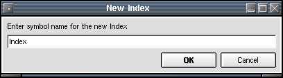
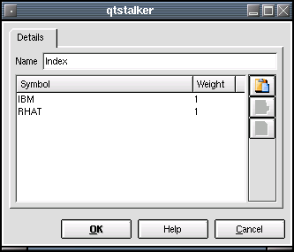
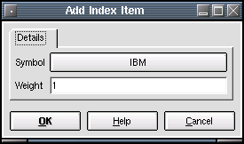

Index
Description:
Create and update custom index charts. An index chart is a composite
of other charts. Basically an index is calculated by multiplying each
symbol
by a weighting factor and then an average of all the weights is used to
create the index value.

The first dialog asks the user to give the index a name.

The 'Name' parameter allows the user to enter a full title or short
description of the index. From the above example you can see that the
index is composed
of 2 symbols each with a weighting of 1. Use the buttons on the button
bar to modify the index items and their values.
Pressing the "Add Item" button will bring up the following dialog that
allows you to select a ticker symbol to apply to the index.

Basically there are 2 parameters for each item that makes up an index chart. The "Symbol" is the chart symbol and the "Weight" is a percentage of the symbol to use in the calculation of the index. A weight of 1.0 means 100%, a weight of 0.5 means 50%, a weight of 2.0 means 200% etc.